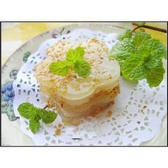

风吹糕

这是京族颇有风味的一种传统的粮食制品。这大多是在每年除夕之夜，全家边守岁边做好煮熟，待新春到来时，先用以供神祭祖，后拿来和糯米糖粥一起吃，以示祝福：生活甜蜜人长寿，偕老白头如“白糍糕”
“风吹糕”是用糯米浸泡使其发胀后，水磨成稀粉，然后用勺子舀到直径40厘米左右的篾托(现已多用薄铝制成)里，大火蒸熟成一面一面的薄粉膜，再撒上一些熟芝麻，晾干后置于炭火上烘烤而成。因经过烘烤，它变得又薄又轻，几乎像透明的薄膜，风吹即飘起，故名。其味香脆爽口，是待客和探亲访友的上好风味食品。“白糍糕”也是先把糯米浸泡，水磨成稀粉，用布滤成半干，然后搓捏成一个个如鸡蛋大小的汤圆，内包糖馅，用水煮至它浮上水面不久即熟。。